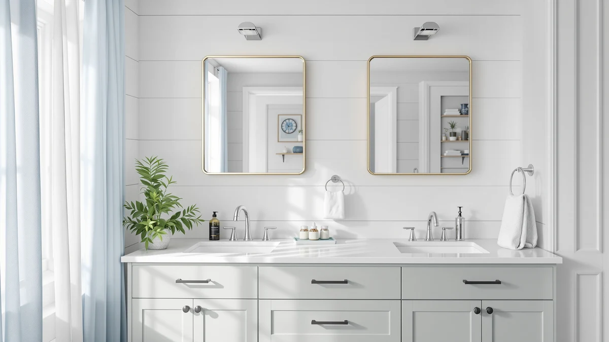

Things to Know Before You Buy
- Floor space is the first question. A floating shelf keeps the floor clear and the room open. A cabinet claims a footprint, but gives you closed storage in return.
- Hidden vs visible. A cabinet hides clutter behind a door. A shelf puts everything on display, so it only looks tidy if you keep it curated.
- Weight matters. A shelf anchored into a stud holds roughly 20 to 40 pounds. A freestanding cabinet carries far more through its own base.
- Installation effort. A shelf needs a drill, a level, and wall anchors. A cabinet needs assembly and a bit of floor, but no holes in your wall.
- Renters should think twice about screws. Shelves leave holes to patch. A cabinet leaves the wall untouched and moves with you.
The floating shelf vs cabinet decision usually comes down to one thing you already know about your bathroom: do you have more wall to spare, or more floor? A floating shelf bolts to the wall and leaves the floor open, which buys you visual breathing room in a tight space. A cabinet stands on the floor and trades that footprint for a door you can close on the mess. Both store your towels and toiletries. They do it in opposite ways.
You also have to be honest about what you keep in the bathroom. If it is a few rolled towels, a plant, and a candle, a shelf shows them off and looks intentional. If it is half-empty shampoo bottles, a hair dryer, and a stack of spare toilet paper, a cabinet hides all of it behind a panel. We compared the two side by side on build, price, and daily use so you can match the right one to your room instead of guessing.
Quick Answer
In the floating shelf vs cabinet matchup, the floating shelf is better for small bathrooms and renters who want an open, airy look and only display a few items. The cabinet is better if you need to hide clutter, store heavier or bulkier supplies, and have a wall or corner you can give up. Neither wins outright. Match it to your space and how much you need to put away.
What is Floating Shelf?
A floating shelf is a flat board that mounts directly to the wall with a hidden bracket, so it looks like it hovers with no visible supports underneath. You drill into the wall, slot the shelf onto the bracket, and the hardware disappears behind the board. In a bathroom, people run one or two of them above the toilet, beside the mirror, or along an empty wall to hold towels, jars, and small decor.
The appeal in the floating shelf vs cabinet comparison is space. The shelf eats none of your floor, so the room reads as larger and easier to clean around. You can mount it at any height, which helps in odd layouts where a cabinet would not fit. Everything you set on it stays in plain view, which is great for a styled look and bad for anything you would rather not see.
The catch is weight and the wall itself. A shelf is only as strong as what it is anchored to. Screwed into a stud, most hold 20 to 40 pounds of evenly spread weight. Anchored into drywall alone, that drops fast, and a sagging or torn-out shelf is a real risk if you overload it. You also need to be comfortable drilling and patching holes later.
What is Cabinet?
A bathroom cabinet is a freestanding storage unit that sits on the floor, usually tall and narrow so it fits beside a toilet, in a corner, or against a spare wall. The models people compare in the floating shelf vs cabinet debate run from about 53 to 67 inches tall, with a mix of closed doors and open shelves. You assemble it, stand it up, and load it without touching the wall.
The cabinet earns its place through hidden storage. A door closes over the spare toilet paper, the cleaning sprays, and the half-used bottles, so the room looks tidy even when the inside is not. Adjustable interior shelves let you fit tall items, and the closed lower section keeps the things you do not want guests to see out of sight.
The trade-off is the floor it takes up. Even a slim cabinet plants a footprint, and in a cramped bathroom that can make the room feel tighter and harder to move around. A tall unit can also feel top-heavy, so you anchor most of them to the wall with the included strap for safety. Assembly takes longer than hanging a shelf, and a cheap cabinet in a humid room can swell or warp over a few years if the finish is poor.
Head-to-Head: Build Quality & Durability
Build quality splits the floating shelf vs cabinet question in a clear way. A floating shelf is a simple object, so its strength lives almost entirely in the bracket and the wall behind it. A solid wood or thick MDF board on a steel bracket sunk into a stud will outlast the bathroom. The same shelf in drywall with plastic anchors will sag under a stack of wet towels within months. The shelf rarely fails. The mounting does.
A cabinet carries its own load through its frame, legs, and base, so it does not depend on your wall to stay up. The tall models here, like the Iwell 67-inch unit, hold far more weight than any shelf because the floor takes the strain. The weak point shifts to the materials. Many budget cabinets use particleboard with a laminate skin, and in a steamy bathroom the edges can swell and the doors can sag over a few years if you skimp.
Durability also depends on how you treat each one. You can overload a shelf in an afternoon and tear it out of the wall. A cabinet is harder to damage through everyday use, but it is bulkier to move and a dropped hinge or a warped door is a more annoying repair than re-drilling a bracket. For raw load capacity the cabinet wins. For longevity, both last when you buy decent materials and install them right.
Head-to-Head: Price & Value
On price, the floating shelf vs cabinet gap is real. A single floating shelf often runs $15 to $40, and even a pair with brackets stays well under what a cabinet costs. The tall cabinets here sit between roughly $99 and $145, so you pay three to five times more for the closed unit. If the goal is to spend the least and free up a wall, the shelf wins on the receipt alone.
Value is a different math. A shelf gives you display space and little else, so a few of them still leave clutter in the open. A cabinet at $99 to $140 buys you doors, multiple interior shelves, and a place to hide everything, which can replace two or three shelves plus an over-toilet rack. If you need to store a lot, the cabinet delivers more storage per dollar even though the sticker is higher. For light use, the shelf is the better value.
Head-to-Head: Use Experience
Day to day, the floating shelf vs cabinet choice changes how the room feels and how much you fuss with it. A shelf gives you instant access. Everything sits in the open, so you grab a towel or a jar without opening anything. The downside is that a shelf only looks good when you keep it edited. Leave a toothpaste tube and a tangle of cords up there and the whole room reads as messy, because there is no door to hide behind.
A cabinet flips that. You open a door, take what you need, and close it, and the room stays calm no matter what state the inside is in. That is a relief if you share the bathroom or you would rather not stare at your supplies. The cost is a little more friction every time, and the floor space the unit occupies means you walk around it instead of through open air.
Cleaning splits the same way. You wipe a shelf in seconds, but dust and water spots show on whatever sits on it. A cabinet keeps its contents dust-free, though you do clean the top surface and the floor underneath is harder to reach. If you want an open, styled bathroom and you stay tidy, the shelf is more pleasant. If you want to close the door on the day, the cabinet wins.
When to Choose Floating Shelf
Choose a floating shelf when floor space is tight and you want the room to feel open. In the floating shelf vs cabinet decision, the shelf is your pick if you only display a handful of items, you like a styled and minimal look, and you are comfortable drilling into a stud and patching a hole later. It also wins on budget, since a pair of shelves costs a fraction of a cabinet. Go this route if your bathroom is small, your storage needs are light, and you keep your surfaces tidy by habit. Skip it if you rent and cannot risk wall damage, or you need to put away bulky and heavy supplies that would overload the brackets.
When to Choose Cabinet
Choose a cabinet when you need to hide clutter and store more than a shelf can hold. In the floating shelf vs cabinet decision, the cabinet is your pick if you keep spare toilet paper, cleaning bottles, a hair dryer, and stacks of towels in the bathroom and you would rather not see any of it. It also suits renters, since it leaves the wall untouched and moves with you. Reach for a cabinet if you have a wall or corner to spare, you want closed storage that always looks tidy, and you do not mind spending $99 to $145 and an hour on assembly. Skip it if your bathroom is so small that any footprint makes it feel cramped, or you prefer the open, airy look that only a wall-mounted shelf delivers.
Our Top Picks
If the floating shelf vs cabinet comparison points you toward closed storage, these three freestanding cabinets are the ones we would buy first. They cover the main budgets and layouts, from a compact unit for a tight gap to a taller model that mixes open and hidden shelves.

Editor’s Pick
Akxomel 53.1" H Tall Bathroom
At 53 inches, this Akxomel unit slots into a narrow gap and mixes open shelves with a closed door, so you display a few things and hide the rest.
$119.99
Check Price on Amazon
Best Value
ChooChoo Tall Bathroom Storage Cabinet
The ChooChoo hides everything behind a full-length door with adjustable interior shelves, the right call when you want nothing on display.
$139.99
Check Price on Amazon
Premium Choice
Iwell 67" Tall Bathroom Cabinet
At 67 inches with open shelves up top and a closed compartment below, the Iwell gives you the most storage here and the closest thing to a shelf-plus-cabinet hybrid.
$99.96
Check Price on AmazonFrequently Asked Questions
Is a floating shelf or a cabinet better for a small bathroom?
In the floating shelf vs cabinet question, a floating shelf usually wins in a small bathroom because it keeps the floor clear and the wall open, which makes a tight room feel bigger. Pick a cabinet only when you need to hide clutter and you have a wall or corner that can spare the footprint.
Can a floating shelf hold as much weight as a cabinet?
No. A floating shelf relies on the bracket and the wall behind it, so most hold around 20 to 40 pounds when anchored into a stud. A freestanding cabinet carries its own load through the legs and base, so it handles stacks of towels, cleaning bottles, and small appliances without you worrying about the fasteners.
Do floating shelves work in a rental?
A floating shelf needs screws in the wall, which leaves holes you have to patch when you move out. A freestanding cabinet leaves the wall untouched and moves with you, so renters who want zero damage tend to choose the cabinet.
Which is easier to install, a shelf or a cabinet?
A floating shelf goes up in a few minutes if you have a drill, a level, and the right anchors, but you do need to find a stud and drill cleanly. A cabinet skips the wall work, yet it takes longer because you assemble it from a flat box. Neither is hard. The shelf is faster, the cabinet is more forgiving if you dislike drilling.
Can I use both a floating shelf and a cabinet together?
Yes, and many bathrooms work best that way. Put a cabinet in the corner for the supplies you want hidden, then add a floating shelf above the toilet or sink for towels and a bit of decor. You get closed storage where you need it and open display where it looks good.
Final Verdict
The floating shelf vs cabinet decision has no single winner, and that is the honest answer. A floating shelf is better for small bathrooms, tight budgets, and renters who keep a styled, open look. A cabinet is better when you need to hide clutter, store heavier supplies, and close a door on the mess. If you have decided you want closed storage, the Akxomel 53.1-inch cabinet is the one we would start with, since it balances a small footprint with both open and hidden shelves. Match the option to your floor space and how much you keep in there, and you will pick right.